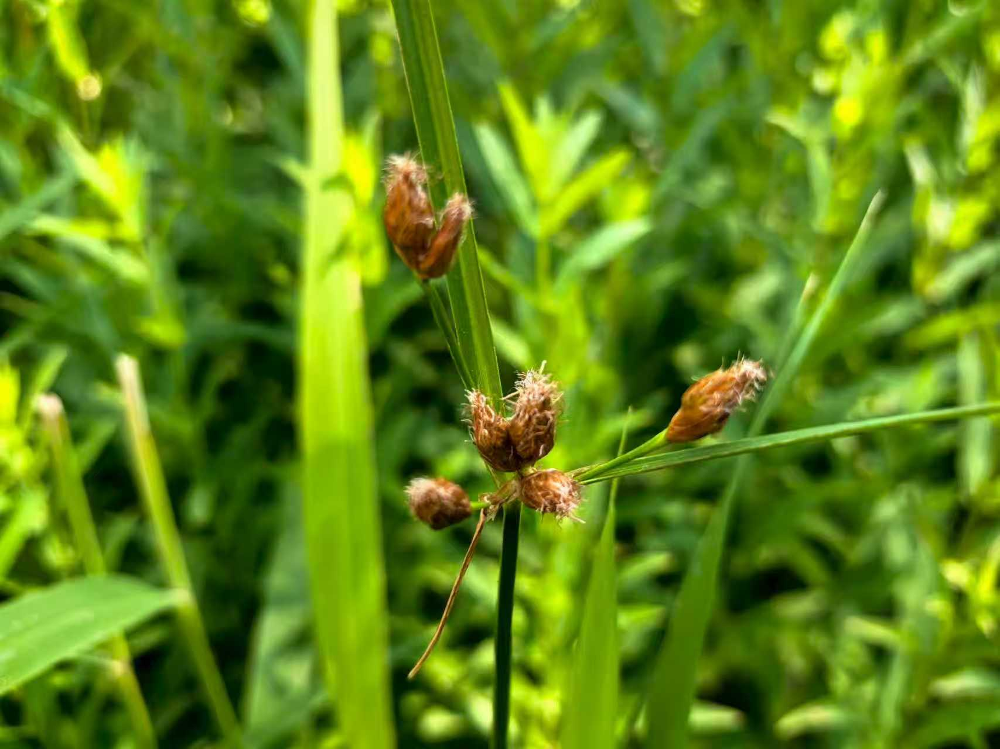

篦齿眼子菜
沉水植物，有助于维持水体透明度和水生态平衡。

千屈菜
多年生挺水草本，株高0.5–1.5米，花紫红色，花期6–9月。

睡莲
多年生水生草本，具浮水叶与沉水叶；夏季开花，净化水质能力强。

荷
多年生挺水草本；花色多样，具观赏、食用及文化价值。

菖蒲
多年生挺水草本，根茎芳香，可入药，常用于湿地恢复。

芦苇
多年生禾本科植物，固沙防风，净化水体，为鸟类提供栖息地。

黄菖蒲
多年生挺水草本，花期5–7月，花黄色艳丽，常用于生态修复。

香蒲
多年生挺水草本，株高可达2.5米，净化水质效果良好。

慈菇
多年生挺水草本，块茎可食，具经济和生态价值。

泽泻
多年生挺水草本，块茎可入药，常用于湿地绿化与净水。

黑三棱
多年生挺水草本，花序球形，常用于湿地生态修复。

荆三棱
多年生挺水草本，株高0.5–1.5米，对湿地生物多样性有贡献。

水葱
多年生挺水草本，根茎可食（荸荠），生态价值高。

花蔺
多年生挺水草本，株高1–2米，具较强水质净化功能。

菰
多年生挺水草本，其膨大茎部为蔬菜“茭白”，生态修复常用。

假稻
多年生湿生草本，具较强固土能力，常用于水土保持。
荇菜
沉水浮叶植物，广泛分布于淡水环境，为水生动物提供栖息地。

浮叶眼子菜
多年生水生草本，具浮水叶与沉水叶，净化能力强。

浮萍
极小浮水草本，繁殖迅速，能吸收水中养分，抑制藻类。

金鱼藻
多年生沉水草本，常用于水族箱与生态恢复。
狐尾藻
多年生沉水草本，生长快，能改善水质。

黑藻
大型沉水植物，具钙质包裹，有助于调节水体硬度。

菹草
多年生沉水草本，花期5–7月，促进水体自净。
苦草
多年生沉水草本，能吸收水中营养盐，帮助净化水质。

光叶眼子菜
多年生沉水草本，常用于水体净化与生态修复。